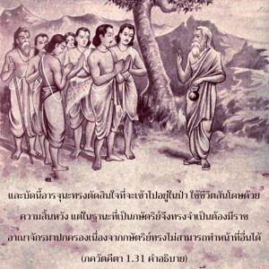

ข้าพเจ้าไม่เห็นว่าจะมีอะไรดีจากการที่ได้สังหารบรรดาญาติในสมรภูมินี้ โอ้ กฺฤษฺณ ที่รัก และข้าก็ไม่สามารถที่จะปรารถนาชัยชนะ ราชอาณาจักร หรือความสุขที่จะตามมา

ด้วยความที่ไม่รู้ว่าผลประโยชน์ของเรานั้นอยู่ในองค์พระวิษฺณุ หรือ ศฺรีกฺฤษฺณ พันธวิญญาณจึงหลงอยู่ในเสน่ห์แห่งความสัมพันธ์ทางร่างกายโดยหวังว่าจะได้รับความสุขในสถานการณ์นี้ แนวความคิดแห่งชีวิตที่มืดมนเช่นนี้ทำให้พวกเราลืมแม้แต่สาเหตุของความสุขทางวัตถุ อรฺชุน ทรงดูเหมือนจะลืมแม้กระทั่งหลักแห่งราชธรรมสำหรับกษัตริย์ ได้กล่าวไว้ว่ามีมนุษย์อยู่สองประเภท คือ กษัตริย์ผู้สิ้นพระชนม์ในสนามรบภายใต้คำสั่งขององค์กฺฤษฺณโดยตรง และผู้สละโลกวัตถุอุทิศชีวิตอยู่ตามลำพังเพื่อวัฒนธรรมทิพย์ ทั้งคู่มีสิทธิ์เข้าไปอยู่ในดวงอาทิตย์ซึ่งมีพลังอำนาจ และรัศมีเจิดจรัสมาก อรฺชุน ทรงปฏิเสธแม้แต่จะสังหารศัตรู และนับประสาอะไรกับญาติๆ โดยคิดว่าจากการสังหารสังคญาตินั้นจะทำให้ชีวิตไม่มีความสุข ฉะนั้นจึงทรงไม่ยินดีที่จะสู้รบเหมือนกับคนที่ไม่รู้สึกหิวก็จะไม่อยากทำอาหารเช่นนั้น และบัดนี้ อรฺชุน ทรงตัดสินใจที่จะเข้าไปอยู่ในป่าใช้ชีวิตสันโดษด้วยความสิ้นหวัง แต่ในฐานะที่เป็นกษัตริย์จึงทรงจำเป็นต้องมีราชอาณาจักรมาปกครอง เนื่องจากเหล่ากษัตริย์จะไม่สามารถทำหน้าที่อื่นได้ แต่ อรฺชุน ทรงไม่มีราชอาณาจักรโอกาสทั้งหมดของ อรฺชุน ที่จะได้รับราชอาณาจักรอยู่ที่การต้องสู้รบกับบรรดาญาติพี่น้อง และยึดครองราชอาณาจักรอันเป็นมรดกจากพระบิดากลับคืนมา ซึ่งพระองค์ทรงไม่ปรารถนาจะทำ ดังนั้นจึงทรงพิจารณาตนเองว่าสมควรที่จะไปใช้ชีวิตอยู่ในป่าอย่างสันโดษด้วยความสิ้นหวัง